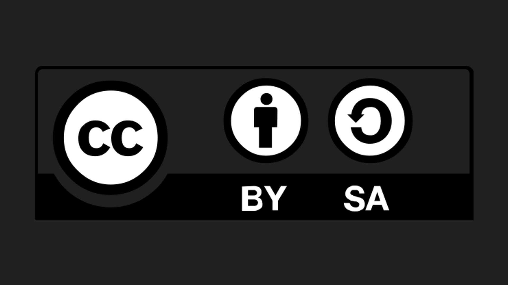

El trabajo titulado "Earth Guardians SdA" de Elisa Suárez está bajo la licencia Creative Commons Reconocimiento-CompartirIgual 4.0 Internacional (CC BY-SA 4.0). Más información: https://creativecommons.org/licenses/by-sa/4.0/

El trabajo titulado "Earth Guardians SdA" de Elisa Suárez está bajo la licencia Creative Commons Reconocimiento-CompartirIgual 4.0 Internacional (CC BY-SA 4.0). Más información: https://creativecommons.org/licenses/by-sa/4.0/

| Título | Earth Guardians SdA |
|---|---|
| Descripción | Actividad 2.a. Concreción curricular de la SdA. |
| Autoría | Elisa Suárez Suárez |
| Licencia | Creative Commons BY-SA 4.0 |
Este contenido fue creado con eXeLearning, el editor libre y de fuente abierta diseñado para crear recursos educativos.
Obra publicada con Licencia Creative Commons Reconocimiento Compartir igual 4.0